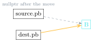

Construction
For class A { int i; B* pb; }; with pb owned:
A::A(A&& a) noexcept : i(a.i), pb(a.pb) { // take the pointer
a.i = 0; a.pb = nullptr; // leave the source empty
}
A& A::operator=(A&& a) noexcept {
if (this != &a) { delete pb; i = a.i; pb = a.pb; a.i = 0; a.pb = nullptr; }
return *this;
}
The cost of a move is a few pointer assignments, independent of the size of what B holds.
Rule of five
A class that manages a resource defines (or = default / = delete explicitly) all of: destructor, copy constructor, copy assignment, move constructor, move assignment. With members that already manage themselves (std::unique_ptr, std::vector) the defaults are correct and nothing needs writing: the rule of zero.
When moves happen
The compiler picks the && overload when the argument is an rvalue: returning a local by value, passing a temporary, v.push_back(A(3)), or an explicit std::move(x), which only casts x to an rvalue and moves nothing by itself.
Picture

Intuition
Copying a moving box means buying the same furniture again; moving means handing over the box.
Pitfall
A moved-from object is valid but unspecified: it may be destroyed or assigned, not read. Move operations should be noexcept, or std::vector will copy instead of moving when it grows.